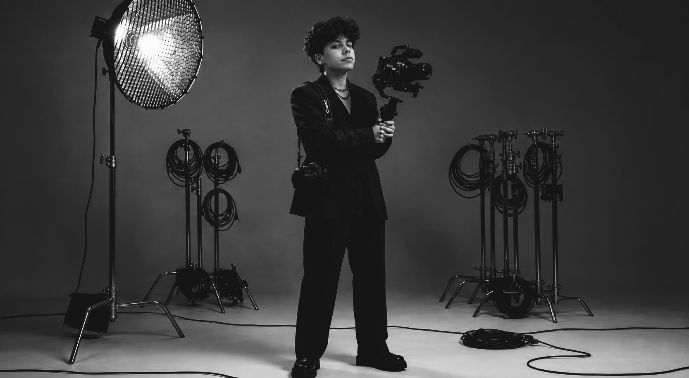

CAPTAÇÃO · EDIÇÃO · FINALIZAÇÃO
Demoreel
Meu trabalho em movimento. Uma seleção de projetos, técnicas e narrativas que representam meu olhar audiovisual.
Videomaker · Filmmaker
Videomaker e filmmaker com foco em produção de conteúdo audiovisual para redes sociais. Trabalho com captação, edição e finalização de vídeos rápidos, cortes e conteúdos pensados para gerar impacto e retenção nas plataformas digitais. Também atuo na produção e cobertura audiovisual de eventos, além de podcasts e projetos de diferentes segmentos. Minha experiência une produção e pós-produção para transformar ideias e momentos em conteúdos dinâmicos, profissionais e prontos para as redes.
CONHEÇA MEU TRABALHO
Um pouco do meu olhar, da minha técnica e da minha forma de contar histórias.
Meu trabalho em movimento. Uma seleção de projetos, técnicas e narrativas que representam meu olhar audiovisual.
Tem um projeto audiovisual em mente ou precisa de uma produção? Entre em contato.